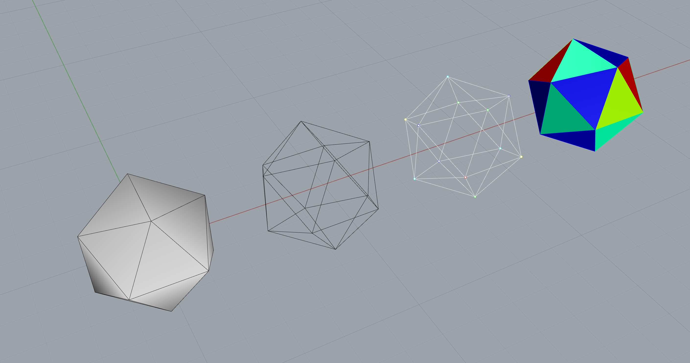

Mesh Visualization in Rhino

Use Dynamic Relaxation to find the equilibrium shape of a mesh. Save the relaxation process in an animated gif.
from __future__ import absolute_import
from __future__ import division
from __future__ import print_function
from compas.datastructures import Mesh
from compas.datastructures import mesh_transform
from compas.datastructures import mesh_dual
from compas.datastructures import mesh_bounding_box_xy
from compas.geometry import Translation
from compas.geometry import Scale
from compas.topology import vertex_coloring
from compas.utilities import Colormap
from compas_rhino.artists import MeshArtist
# mesh representation of an icosahedron
# and its dual
mesh = Mesh.from_polyhedron(20)
dual = mesh_dual(mesh)
# mesh transformation for drawing various representations
# of the mesh in non-overlapping way
# the mesh will be transformed in-place
# therefore the same transformation can be applied consecutively
bbox = mesh_bounding_box_xy(mesh)
dx = bbox[1][0] - bbox[0][0]
X = Translation([1.5 * dx, 0, 0])
# vertex coloring
key_color = vertex_coloring(mesh.adjacency)
c = len(set(key_color.values()))
colors = Colormap(list(range(c)), 'rgb')
vertexcolor = {key: colors(key_color[key]) for key in mesh.vertices()}
# face coloring
# which is the same as a vertex coloring of the dual
key_color = vertex_coloring(dual.adjacency)
c = len(set(key_color.values()))
colors = Colormap(list(range(c)), 'rgb')
facecolor = {key: colors(key_color[key]) for key in dual.vertices()}
# the artist for drawing various versions of the mesh
artist = MeshArtist(mesh)
# mesh
mesh.name = "Mesh"
artist.clear()
artist.draw_mesh()
# edges
mesh.name = "Edges"
mesh_transform(mesh, X)
artist.clear()
artist.draw_edges()
# vertices
mesh.name = "Vertices"
mesh_transform(mesh, X)
artist.clear()
artist.draw_vertices(color=vertexcolor)
artist.draw_edges(color=(255, 255, 255))
# faces
mesh.name = "Faces"
mesh_transform(mesh, X)
artist.clear()
artist.draw_faces(color=facecolor)